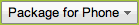
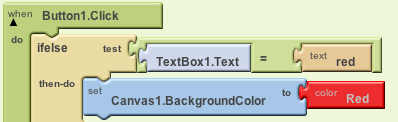
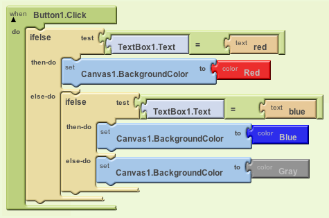
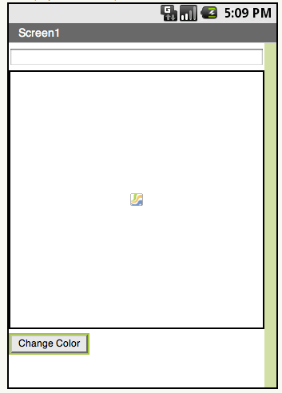

The best way to get started is to go to AppInventors About Page and read over their documentation. Once you have looked this page over, maybe even have seen the video "App Inventor in Action", click the Get Started Button.
This will take you to a page for the App Inventor Setup. It does require a little installation on the working computer. This page is very helpful to learn how to setup the App Inventor, it also details how to set up your Android phone and also an emulator if you would prefer that development target.
Once you have set up your computer, you can click on the "My projects" button in the upper right hand corner of the App Inventor page. This will show any projects that you may have created, but as you are just getting familar with this process, the list should be empty. No worries, we will change that shortly.
Once you have set up your computer, I'm sure you will be very excited to start using App Inventor. As an introduction to computer science, let me formally introduce you to the most written program in all of technology. The Hello World! Program. This is a very simple program that will display the text "Hello World!" to the screen. Sounds simple? Lets get started.
First, navigate to the My Projects page and click New Project. Name this project anything, be descriptive, something along the lines of "Hello_World" works magically. From here You should see the Interface Creation window. This consists of the Palette, for adding components, the Viewer, to give a simple layout screen for the app, the Components, to show you which components you have added to you application, and the Properties, which lets you edit the properties of the selected component. Here you also should see a Media pane which allows you to upload custom media to the App Inventor to be added into your app. See the screenshots below:
From here drag and drop a Label from the Palette onto the screen in the Viewer. Once dropped onto the screen it will appear with the text "Text for Label 1" in the Viewer and in the Components pane you will see a component named "Label1". This is all we'll need to add for this first project. From here, click on the Label1 component and look in its Properties. Change the Text to "Hello World!". You can change the font size from in this pane, also the text alignment. Personally, I prefer to center the label in the screen by setting the width to Fill Parent and have the text alignment centered. You can play with these properties and see how they will change your label.
We're finished! Kind of. This is a cool app but its not yet running on a phone! In order to deploy, click the  button in the upper right hand corner. You can choose any option, I prefer to use the "Show Barcode" method. For more information on packaging apps for the phone, read our Packaging for the Device section.
While programming or creating apps. You'll often need to change the flow of control. For instance, if writing a simple blackjack simulator, the dealer will always hit if its score is less than 17. Though if his score is equal to or greater than 17 the dealer will stay. This IF something THEN something phrase has been adapted into computer science. Here we will create a simple project to show how these IF statements work in App Inventor.
First off, create a new project and name it something. I used the name "IfElse". Then drag some components onto the screen. The components you will want to drag on are a TextBox, a Canvas, and a Button. Change the "Hint" Property of the Textbox to "Enter Color". Also change the height and width of the canvas so that it takes up most of the screen. I set the width to Fill Parent and the height to 320px. This should make a perfect square. The Button text then can be changed from the default to "Change Color". You may have some assumptions on what this app will do, basically it will take input from the textbox when the button is clicked, if that input is recognized we will change the background color of the canvas to the correct color.
After all the components have been dropped onto the screen, and also all the properties have been properly set to distinguishable values. Click the button in the upper right hand corner to . This should open the App Inventor Blocks Editing program on your computer. If you want to learn more how to use the Blocks Editor, see the Using The Blocks Editor section of this wiki.
In the Blocks Editor, click the My Blocks tab on the left hand toolbar. Here you should see all the components we added via the Interface Creator. When you click on a component, you should see all the possible actions for that specific component. For our purposes, click and drag a Button1. Click piece and drag it into the workspace (anywhere on screen). Then click the Built-In tab, click control, and drag an ifelse piece into the workspace. Make sure that you connect it in the correct notches of the Button1.Click piece. It should snap to place when the block editor recognizes what you are doing.
Now we'll add pieces to the test socket. First click the Built In tab, click logic, and drag the piece that has the equals sign seperating two open spaces. In the first open space add in a TextBox1.Text piece (My Blocks -> TextBox1). In the second open space, add a blank text piece (Built-In -> Text). Click on this added text to edit the value of the text. Type 'red' (without quotes). Under the "then-do" open space in the ifelse piece drop a set Canvas1.BackgroundColor piece(My Blocks -> Canvas). Then drop a color red piece in the "to" socket. So that the statement should read :

That is the first part of the if statement. When the button is pressed, this program checks the text entered into TextBox1. If the text is equal to 'red' it will set the background color of Canvas1 to red. We will continue to program what happens when the text does not equal red. In the else-do open socket add another if-else statement. Notice that we can nest these if else pieces to make lots and lots of choices. Here we are going to copy the same steps as above for the test. The only difference is to change the text from 'red' to 'blue' (again without the quotes). In the then-do socket change the background color of the canvas to blue instead of red. This will look exactly like it did above.
Then in our second else-do socket just change the background color of the canvas to grey, or any other color that you'd like. Don't make this color red or blue though, that would just be stupid. Don't be stupid. That will be it! Once you have completed that your block code and interface viewer should look similar to what is below:
 Running this application should give you the following behavior. On startup you will see a white screen with a text field at the top of the screen and a button at the bottom. If you click change color as is, the canvas background color will change to grey. Entering the text 'red' (without quotes) into the text box and then clicking the button will change the color of the canvas background to red. Entering 'blue' into the text box and clicking the button will change the canvas background color to blue.